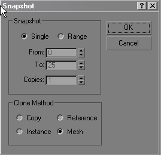

Exporting Characters
General Information and Tricks of the Trade:
Building a character. There are good references out there. I suggest "Modeling a Character in 3DSMAX" by Paul Steed.

Here is an example file of a completed character model. Both the model (player.max) and the skin (player.png) are located in the documentation file pack.
Make sure that your unit scale is correct (see General Information in the beginning of the Documentation) and that the character is facing forward (looking down the positive Y axis). If you go to Front view in 3DSMAX, you should be looking at the characters backside.
Create your bounding box. As above make sure it is aligned correctly (create it in either the top, perspective, or user view).
Check the mesh for holes and double faces. I do this by using the STL check modifier, the use of which is covered in your 3DSMAX documentation. This will allow you to see if the mesh has any holes or double faces. If it does, fix them before hooking up the mesh to the bone system.
Make sure your mesh transforms are clean. If you have scaled the shape or used mirroring any portion of the mesh during construction, reset the transform.
There is a foolproof way to reset the transform of a mesh in 3DSMAX. Most of the built in methods for resetting the transform are not as clean doing 'The box trick".
Resetting Transforms:
Make a box, put it at the origin of the bounding box (use the align tool) and then collapse the box so that it becomes an editable mesh. Go into the modifier panel and click on the "attach" button, then click on your character mesh to attach it to the box that you just created. The character should now be a part of Box01. Choose >Select by Element> select the box shape and delete it.
Your character mesh has a brand new transform. Now you just need to rename your character mesh so that it conforms to the export parameters.
It is preferable to do this then to use reset x-form. Reset x-form does it's work by sticking a modifier in the 3DSMAX modifier stack. This adds additional data that must be interpreted by 3DSMAX in order to output the correct data, and it is not always correct or accurate. It works, but it has proved problematic in the past on certain shapes.
Skeleton Creation:
Create a skeleton for the character and add any necessary nodes that are required for the game. There is nothing in the DTS exporter that demands anything to exist in the scene (except a bounding box). In this example, a Character Studio Biped is used for the skeleton, but you can use 3DSMAX bones, boxes, dummies, or whatever.
Biped is not required to work with the Torque engine.
The game (take for example the demo) may require your character to have certain nodes contained in the shape in order to function properly. These usually consist of camera and eye nodes, mount points for weapons, etc�
If you are just starting out with characters for the Torque Engine, it is advisable that you use the default player skeleton. The naming convention and structure of the skeleton is visible in the following image.
The bones that are not included in the schematic (they were omitted to fit the image on one screen) follow the default Biped naming convention.
- 0. Quit all 3dsmax sessions.
- 1. Create a folder called 'old' in your 3dsmax3\stdplugs directory.
- 2. Move bonesDef.dlm into this directory.
- 3. Copy file skin.dlm into your 3dsmax3\plugins directory.
- 4. Copy file MaxComponents.dll into your 3dsmax3\ directory
- 5. Register the dll manually by calling: "regsvr32 MAXComponents.dll" from the command line.
- 6. Restart 3DSMAX. Skin objects from before will work just the same except they should now be called "Com Skin" objects.
Real Time Deformation vs. Morph animation:
The exporter and the game engine support both morphing meshes and real time skin deformation. To get the most out of both types, one must understand the differences between the two.
Real time deformation uses the node transforms (a skeleton) to drive the deformation of the mesh vertices in the engine. The vertices of your mesh are assigned weights to the skeletal nodes and the transforms of the skeletal nodes then deform the mesh. This happens in real time.
It is very efficient, the files are smaller, and it is flexible as it allows for the animation (and direct manipulation) of the skeleton to deform the mesh.
Morph meshes do not use nodes to drive the animation. In the 3DSMAX scene, you may be using bones, x-forms, or linked x-forms to animate the mesh, but the end result is different.
In morph animations, the location of every vertex in the mesh is saved off for every frame (and every detail level) and the position of each vertex is updated on every frame. Morph animations are not as efficient of flexible as real time skeletal deformation.
It is advisable to use skeletal animation rather than morph animation in all but the most special of circumstances.
Physique:
Physique is not supported for real time deformation. If you use physique, it will be exported as a 'Morph" animation. It will take a snapshot of the position of the mesh at every frame for all of the animations. Real-time deformation will not be taking place, which means it will not work with the default animations, blend animations will not work, and the transitions will not work. This also makes the files HUGE. It has to take a snapshot of every vertex (including the vertices of all the detail levels) for every frame of the animation.
Other mesh deformation modifiers like x-form and linked x-form are supported as morph animations, but as above, they will not deform in real time based on the skeleton.
ComSkin and Deformable Meshes:
Deformable meshes (skeletal animations) are supported in the game. The mesh will deform in real time based on the movement of an internal skeleton. To use this feature, the object must be set up using the Skin Modifier in 3DSMAX. Physique is not supported for real-time deformation and animation exported using physique will be exported as morph meshes.
3DSMAX 3 requires a special version of the skin modifier called Com_skin.
NOTE: The procedure outlined below is not required for 3DS-MAX 4.
To use ComSkin you must install two plugins: skin.dlm and MAXComponents.dll, both of which are available in the documentation file pack
To install it, you must follow this procedure:
Some people have had problems running com_skin without certain .dlls that come with MSVC++. If you can't register MAXComponents, this is most likely the problem.
NOTE: The procedure outlined above is not required for 3DSMAX 4.
Objects that have the skin modifier applied to them are recognized by the exporter as skin objects. They should be unlinked and floating in the scene (they do not have to be a part of the shape subtree).
The deformation gizmos in 3DSMAX 4 (part of the skin modifier) are not supported.
Setting up the Skin Modifier:
Get you character and skeleton aligned and apply the skin modifier. Before you do this make sure that the mesh to be skinned is not linked to anything. If it is linked to the start of the hierarchy, you will get an additional transform introduced into the shape and it will behave incorrectly.
The skin modifier is covered in detail in the 3DSMAX documentation. Use those documents for information about how to set up your envelopes and otherwise control the weighting of the skin.
The following information includes some Torque specific tips.
You don't need to included all the bones. Include only the bones necessary to make the deformation work. Be particular about what you add.
Just about anything can be used as a bone, but certain objects like space warps, lights, and cameras, and Biped footsteps do not always work (they won't be considered bones on export).
Although there is a button to remove bones from the skinlist, don't get in the habit of using it. It will remove it from the display, but it may confuse the exporter. Adding the bone back in won't solve the problems that removing the bone caused, the only solution is to delete the modifier and redo the skinning.
This is a limitation of 3DSMAX 3. Deleting bones usually works in 3DSMAX 4, but it is a good habit not to delete bones from the skinlist.
The Deformation gizmos introduced in 3DSMAX 4 are not supported.
Linking the Bounds:
After the shape is all linked up, link the bounding box to the hip (or BIP node) of the character. Later on, when we get into animation, it will be important that this is done. Go into the Hierarchy panel and turn off the X and Z inheritance for the bounding box. Turn off the rotation inheritance as well.
The bounding box will now follow the shape as it animates forward, but will not inherit the Z (up and down) and X (side to side) motion. The inherit X should be turned back on for aniamtions that require the character to move sideways (strafe or sidestep animations)
MultiRes and Deformable Mesh (Com_Skin) objects:
You can use MultiRes to generate the detail levels for your deformable mesh objects. When we first tried it in 3DSMAX 3, it didn't work. It resulted in an instant crash of 3DSMAX. So, the way it works is that you have to make a copy of the mesh in the exact same position as the skinned mesh. One copy contains the weighting information, the other contains the MultiRes information.
What you will need to do is clone the skinned object (using Tools>Snapshot) at frame 0 in your 3DSMAX scene. Choose single, with mesh output. The exporter uses frame 0 as the reference frame for comparison of the vertex positions so it can reconstruct the shape.

Don't use edit>clone to make a new shape. If you do so, the mesh will be in the initial position that object was in before it was skinned and put in the root position. The 'skinned' mesh and the MultiRes mesh must be in the EXACT same position (all the vertices must be in the exact same place) or it will not export properly.
This will give you and editable mesh in the exact same position as the skinned mesh. Rename this mesh MultiRes::<yourShape> and then link it to the skinned mesh. Apply a MultiRes modifier and hit the generate button.
Use the 'AdjustLODs' script to generate the values in the shapes User Properties using the method covered in Section I: Mutires.
You will have two copies of your shape in the scene. One with the skin modifier and one with the MultiRes modifier. If you change either object you'll have to "synch" them up again (i.e., repeat the procedure we just went through).
Note: shapes made using MultiRes in 3DSMAX 3 will generate a "Missing OSM" (Missing Object Space Modifier) warning when you open them in 3DS Max 4. To solve this problem, delete the "Missing OSM" from the top of the modifier stack of the objects that generate this error and add a new MultiRes modifier to the object (don't forget to hit the generate button).
3DSMAX 4 won't crash if you put a Multires modifier on top of a deformable mesh (skin) object, but you still have to make the clone or the exporter will not recognize it.
NOTE: The meshes must be in EXACTLY the same position or it will not work properly! It will export, but in the engine it will look like a big spiky ball of polygons.
Exporting the DTS Shape:
Export it as a DTS. (Choose Export>Whole Shape in the Exporter Utility). Name it appropriately. If you are going the be putting this shape in as a player, it will simplify things if you name the shape player.DTS. Make sure you rename the default player shape to player.DTS.old so you don't overwrite it.
Setting up the .CFG file for the DTS shape:
If it exports, then the mesh shape is okay and not corrupt in any way, and you can move onto the .CFG file to tune the shape and include what is necessary for it to work with the animations.
A DSQ file, or sequence animation, will not load into a shape if it has nodes that are not in the base (DTS)shape. This is the #1 reason why shapes mysteriously stop working in the game when they get re-exported. The exporter discards what it thinks are useless nodes. These include nodes without meshes, and nodes that are not animating. In the base DTS shape file, there are usually a lot of 'useless' nodes. These same nodes may be animated in a DSQ shape file, and the exporter will not consider them to be so useless and include them during export, resulting in DSQ with a node that does not exist in the DTS.
In order to make sure they get exported in the base DTS shape, you should use a .CFG file to make sure all the needed nodes are included in the shape.
When you export a shape the exporter looks for a file called <somename>.CFG' (usually named DTSScene.CFG) in the same directory as the .max file being exported
We have included an example of a scene .CFG script in the documentation file pack name player.cfg
Names of nodes are put into one of 3 lists (the always export list, the never export list, or the never animate list). Which list depends on which of the 3 keywords occurred most recently in the file (if none of them have, the name is put on the always export list). Names can include wildcards (*).
You should put all the skeletal nodes that are going to be animated in the 'Always Export'list.
Here is the config file that I am using for my latest character. It is a single mesh character using the default Torque character animations.
AlwaysExport: eye cam mount0 //mount1 //jetnozzle0 NeverExport: Bip01 Bip01 L Finger* Bip01 R Finger* Dummy* Bip01 L Toe* Bip01 R Toe* start01 mountpoint DELETE* //Ski0 //Ski1 Light0 Light1 //Mount1 //Mount2
Note that you can comment out lines of the .CFG by using "//". In this example, I am culling out nodes that are not animated in the DSQ files, and are not necessary for the shape to function. The more nodes that you can cull out, the smaller and more efficient the shape will be.
On the Always export list, certain nodes that usually would get discarded (non-animating dummies and nodes without meshes are included)
I should mention that the file is not named DTSscene.CFG. This one, for the player, is called player.CFG
The shape looks for a file with a .CFG extension in the directory that the shape is in when it exports the shape. I like to rename them to match the shape. Usually I set up a directory for each shape. In your text editor, it makes it easier to deal with. When we get into animation, you might have several .CFG files open at once, and it is hard to keep track of what you are doing if all of them are named DTSscene.CFG.
Now that you have a .CFG file, and it is set up properly with al the relevant nodes on the list, and all extraneous shapes and nodes (Lights, reference shapes, etc�) culled out by putting them on the 'Never Export" list, you are ready for exporting the finished model. Export it.
You should now have a nearly finished almost working DTS shape. It will work in show, but it may not function properly in the game yet.
NOTE: It is a good idea to get into the habit of checking your dump.dmp files to make sure that the nodes you think are exporting are exporting. Look at the bottom of the file for the Shape Hierarchy, it tells you everything you need to know. Looking at the dump file is alos useful for tracking down problems in the shape when it is failing to export, often times allowing you to track down the problem mesh or bone or vertex.
NOTE: You can also achieve the same results in the DTS shape file by exporting it with 'collapse transforms' turned off. This is not considered to be a good practice, as you should be using the .CFG files to control your node structure, but it works as it ensures that ALL the nodes in the shape are included in the DTS file.
UnMessDTS:
The T2Autodetail scheme introduced at the end of Tribes 2 does not work with deformable meshes. In order to get them to function properly in the game, you must turn off the new detailing scheme. Unfortunately, the last code drop GarageGames received from the Tribes 2 team happened before the switches introduced into the exporter to accomplish this got into the source.
There is a little utility called UnMessDTS that reverts the shapes back to the 'old' way of doing things, and they then work fine in the game engine.
The unMessDTS.exe utility is included in the documentation file pack.
Here is the usage.
From the command line:
unmessDTS <input>.DTS <output>.DTS
You should now have a fully functioning and optimized shape and should be ready to move onto animation.